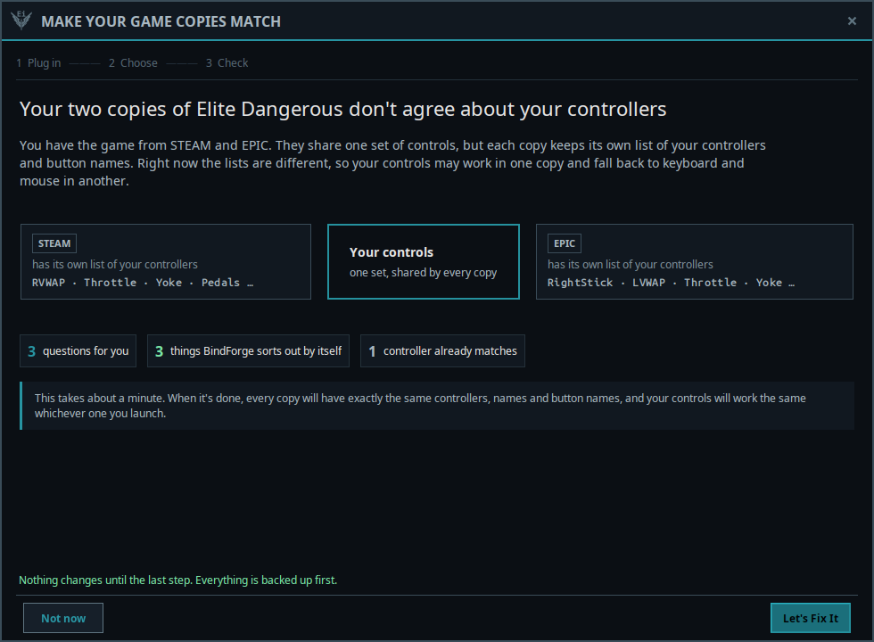

Встановлення
Elite Intel V1.2 — поточна версія.
 Linux
Linux  Windows
Windows
- Завантажте 👉інсталятор👈.
- Запустіть інсталятор і дотримуйтесь підказок на екрані.
- Налаштувати мовну модель. Без неї Elite Intel не працює. Два варіанти:
- Локальна LLM (безкоштовно, офлайн): див. посібник із локальної LLM. Потрібна продуктивна відеокарта.
- Хмарна LLM (платно, налаштувати простіше): див. Варіанти хмарних LLM, щоб отримати API-ключ, а потім введіть його в Сервіси → Сервіси ШІ.
Встановлення завершено. Далі: інтерфейс, вкладка за вкладкою.
Контрольний список першого запуску
Під час старту служб Elite Intel вимовляє ці попередження вголос, тож ви почуєте про все, чого бракує, — але краще зробити це заздалегідь:
| Крок | Де |
|---|---|
| Вказати мовну модель | Сервіси → Сервіси ШІ |
| Перевірити теку журналу | Вкладка «Командир» |
| Дати BindForge налаштуватися й видати «Везі» потрібні клавіші | Вкладка BindForge |
| Відкалібрувати звук | Вкладка «Вега» → КАЛІБРУВАННЯ ЗВУКУ |
Що Elite Intel налаштовує за вас
Три речі, які варто знати перед початком на свіжій установці.
LM Studio, встановлений за вас
Якщо LM Studio потрібен лише для Elite Intel, дайте Elite Intel встановити його. Це рекомендований спосіб. Натисніть Встановити LM Studio у Сервіси → Сервіси ШІ → LMStudio. Elite Intel встановить LM Studio, завантажить і запустить модель, перевірить її та заповнить Адресу й Модель за вас. Далі він запускає LM Studio разом зі своїми службами й зупиняє, коли ви їх зупиняєте або закриваєте застосунок, тож модель займає пам'ять відеокарти лише поки працює Elite Intel. Видалити LM Studio прибирає його.
Кнопка з'являється лише тоді, коли ваші відеокарти вміщують гру й модель одночасно: NVIDIA RTX 3090 на 24 ГБ або краща, дві новіші карти NVIDIA з приблизно 20 ГБ на двох або карти AMD з такою самою пам'яттю, у бета-режимі. Подробиці — у посібнику з локальної LLM. Якщо ви використовуєте LM Studio ще для чогось, встановіть його самі: тоді Elite Intel лише додасть модель і заповнить поля, і ніколи не запускатиме, не зупинятиме й не видалятиме ваш LM Studio.
Ваш HOTAS, джойстики й педалі
Коли ви вперше відкриваєте вкладку BindForge, вона створює резервну копію файлів керування, знаходить кожну копію гри на цьому ПК і дивиться, що підключено. Від початку гра знає багато контролерів лише за апаратним ідентифікатором. BindForge пропонує кожному контролеру без назви справжню, наприклад Throttle чи Pedals, і цей крок можна Пропустити.

Пізніше в Конструкторі псевдонімів натисніть шестірню контролера, щоб підписати його кнопки, осі та хатки. Натисніть кнопку — і її поле засвітиться, тож видно, яка є яка. Підписи з'являються на екрані керування в грі та в редакторі прив'язок.

Гра з кількох магазинів
Маєте Elite Dangerous і в Steam, і в Epic? Усі копії мають спільне керування, але кожна зберігає власний список ваших контролерів і назв кнопок. Коли списки розходяться, керування може працювати в одній копії й скидатися на клавіатуру та мишу в іншій. BindForge помічає це під час першого відкриття і пропонує Узгодити копії гри:

- Підключити — підключіть контролери, якими літаєте. Натисніть кнопку — і її рядок засвітиться.
- Вибрати — дайте відповідь на кілька коротких запитань, наприклад яку назву лишити контролеру, який кожна копія називає по-своєму. Ваше керування піде за вибраною назвою. Забагато запитань? Зробити все як в одній з моїх копій... налаштує все так, як у копії, в яку ви граєте найбільше.
- Перевірити — подивіться, що саме отримає кожна копія і чому, перш ніж щось зміниться.

До останнього кроку нічого не змінюється, а все спершу копіюється. Не зараз лишає файли як є. Якщо пізніше файли керування однієї копії зміняться, наприклад після оновлення гри, BindForge спитає лише Яке налаштування актуальне? і узгодить решту.
Уперше в Elite Dangerous?
Гра створює файли керування лише після того, як ви щось змінили, а без них Elite Intel не може керувати кораблем. Пройдіть навчання командира, потім у грі в розділі Налаштування → Керування призначте рух інтерфейсу галактичної карти на клавіші зі стрілками й застосуйте.
Перехід на інший комп'ютер
Резервна копія на вкладці «Сервіси» зберігає налаштування, дані й власні команди в один файл, який можна відновити на новому комп'ютері.
Видалення (Linux)
~/.var/app/elite.intel.app/uninstall
З питань натисніть Повідомити про помилку на вкладці «Вега»: опис піде просто команді, обліковий запис не потрібен. Щоб поспілкуватися з нами, приєднуйтеся до спільноти в Matrix із безкоштовним обліковим записом. Найкраще застосунок Element, але для швидкої розмови підійде будь-який сучасний браузер. Звіти про помилки та pull-запити вітаються.
Community 👉Matrix👈